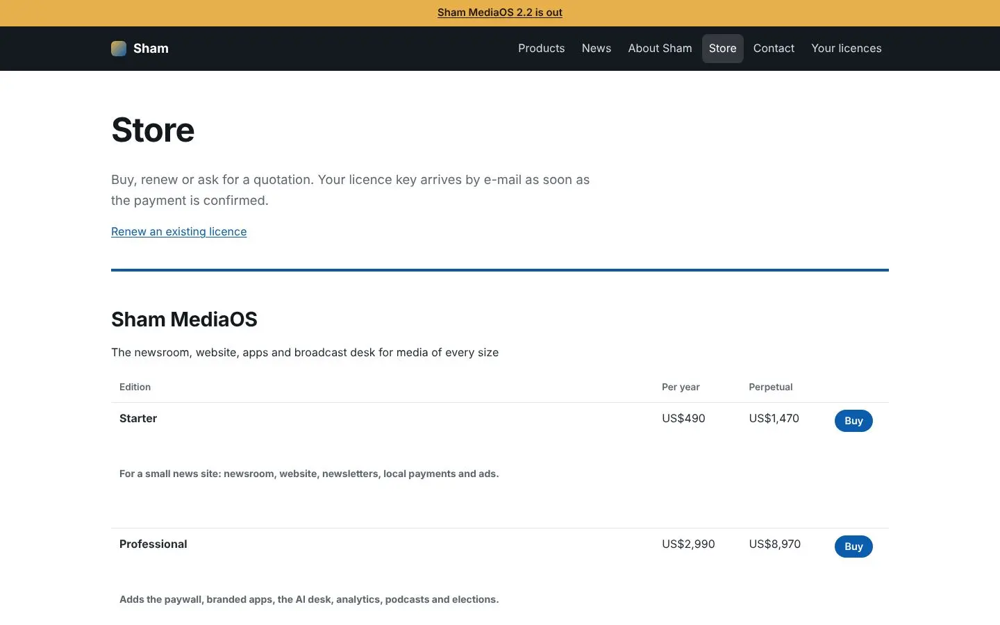
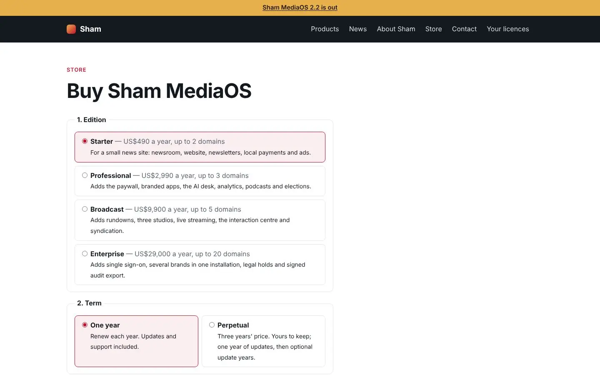
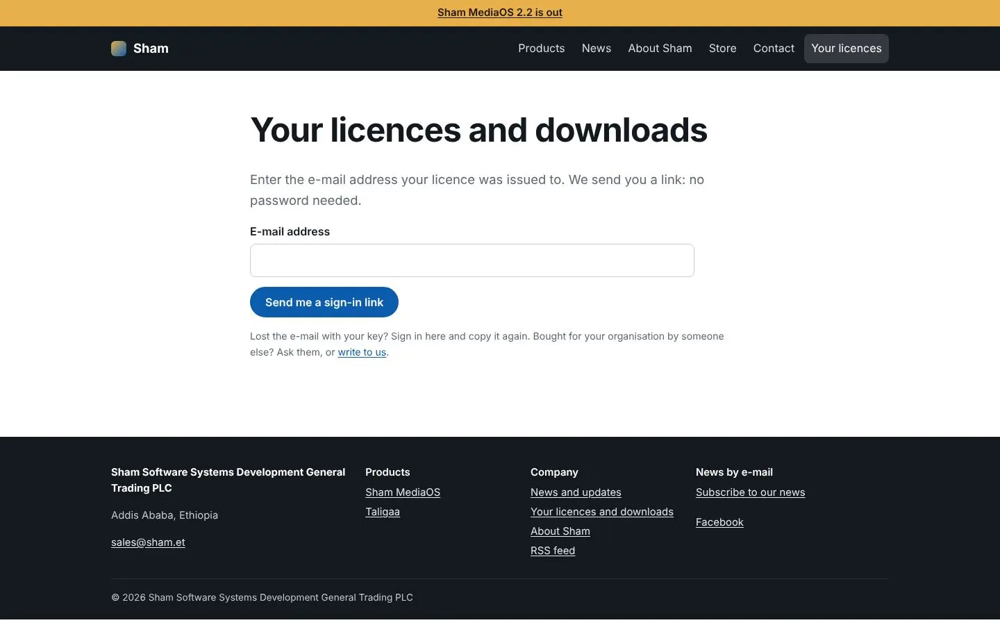
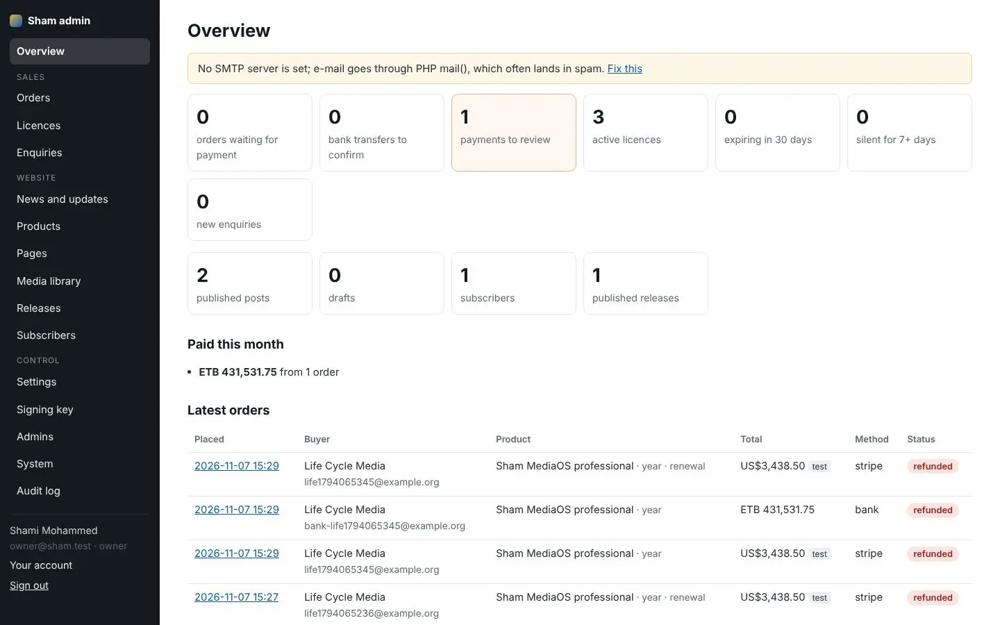
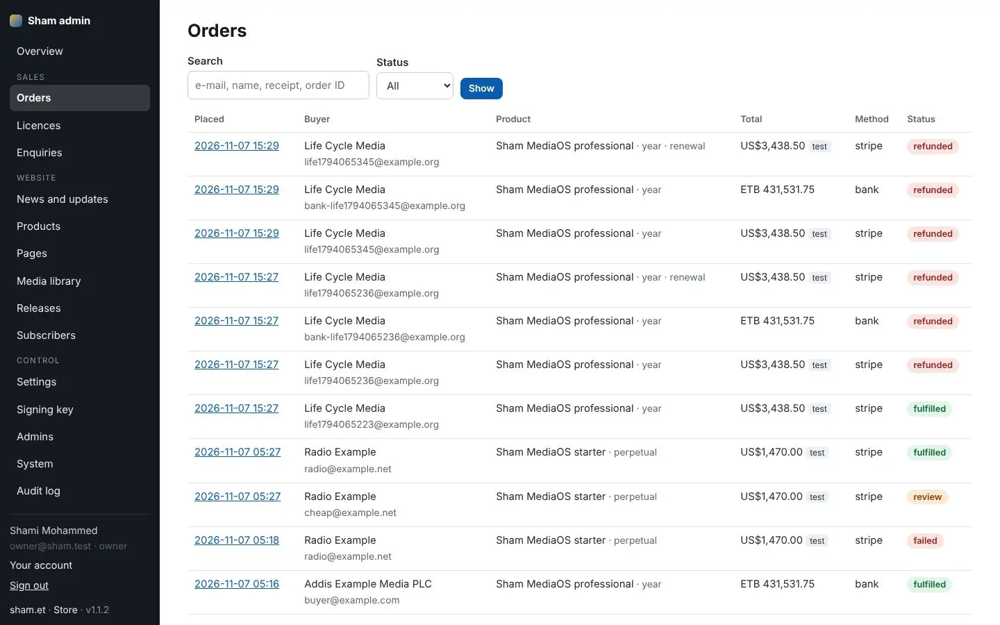
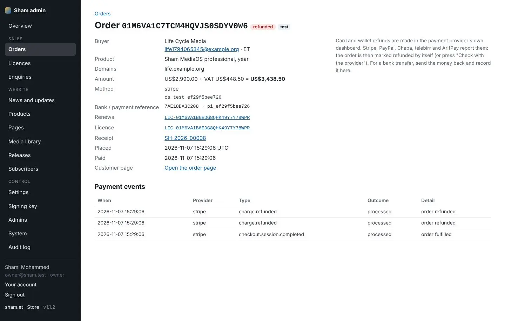
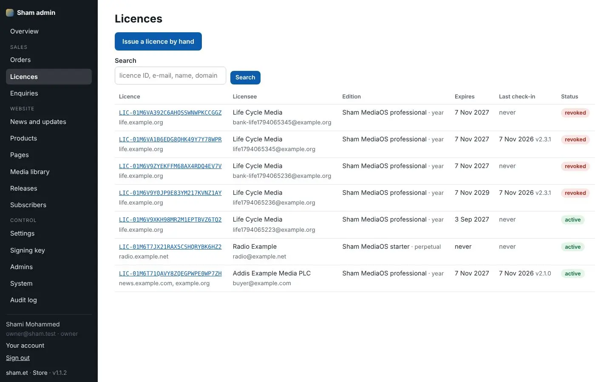
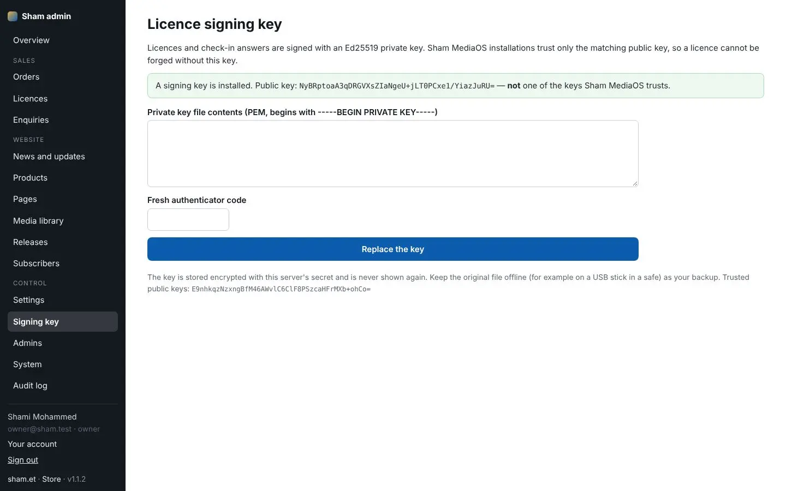
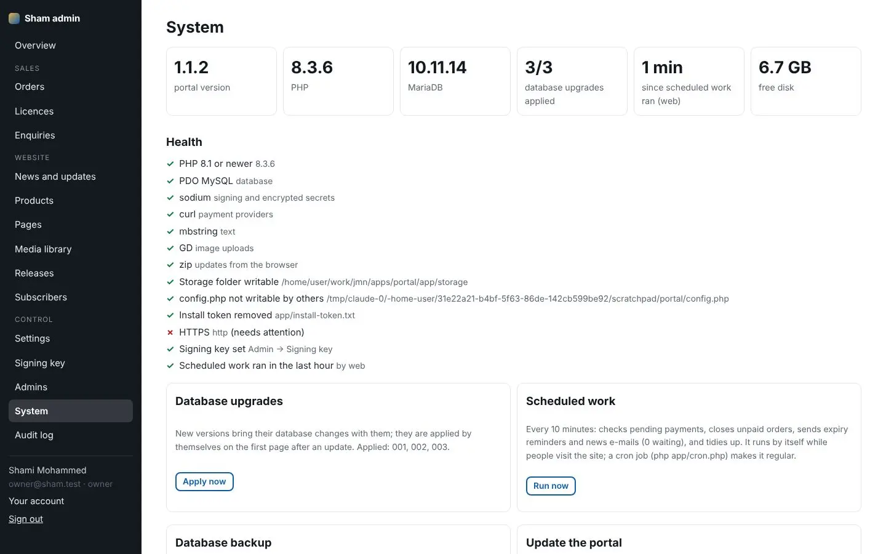

For customers: how to buy, install, renew and transfer a licence. For Sham operators: running the sham.et website, store, licence server, refunds and portal updates.
Note
Background that helps you understand what the system is doing.
Tip
A faster or better way to do something.
Important
Something that can cost you work, money or trust if you skip it.
Danger
A step that cannot be undone, or that can expose data.
Who can do this
The roles or permissions a task needs.
Steps
Text in monospace is something you type or see exactly. Bold names a button, field or menu. Blue links jump to another place in this book; in the PDF they are clickable, and so is every line of the contents and the index. Screenshots show the example outlet Horn Daily in green; your system shows your own name, logo, colour and languages.
| Vol. | Title | For |
|---|---|---|
| 01 | Product Bible | buyers, owners, managers and everyone new to the product |
| 02 | Reader Guide | readers, help-desk staff and audience teams |
| 03 | Newsroom User Manual | reporters, editors and newsroom staff |
| 04 | Advanced User Manual | senior editors, producers, audience and commercial leads |
| 05 | Administrator Manual | system administrators and technical owners |
| 06 | Installation and Operations Manual | IT, hosting and operations staff |
| 07 | Advanced Technical Manual | developers, integrators, architects and security reviewers |
| 08 | Training Manual | trainers, new staff and team leads |
| 09 | FAQ and Troubleshooting | everyone, and the help desk |
| 10 | sham.et Store and Licensing Manual | customers buying licences and Sham operators |
| 11 | Commercial and Legal Pack | buyers, procurement, legal and sales teams |
© 2026 Sham Software Systems Development General Trading PLC. All rights reserved. This documentation is supplied to licensed customers of Sham MediaOS and may be copied for their internal training and use. Product names of third parties (for example Stripe, Google Play, the App Store, Microsoft Store, LiveKit, Jitsi, Cloudflare) belong to their owners and are used only to describe how Sham MediaOS works with them. Features marked as optional need a separate account with that provider; Sham MediaOS does not include those services.
This part is for customers. It explains how to buy Sham MediaOS at the sham.et store, receive and install the licence, download releases, renew, and what to do if something goes wrong.
| Address | What you do there |
|---|---|
| sham.et | Read about Sham and its products, news and updates, contact Sham |
| media.sham.et | Everything about Sham MediaOS: features, editions, releases |
| store.sham.et | Buy, renew, get receipts; your licences and downloads |
| licensing.sham.et | Used by your installation for daily check-ins and update checks; you do not visit it |
To buy Sham MediaOS

Bank transfer
For a bank transfer, the order page shows Sham's bank details and your order reference. Put the reference in the transfer. When Sham's staff see the money arrive, they mark the order paid and your key is sent. This can take one or two working days.
Prices and VAT
Prices are shown before VAT. VAT is added for customers in Ethiopia. You can pay in birr at the rate shown at checkout.
Steps
LIC1.) and select Install.Open store.sham.et/account, enter the e-mail address your licence was issued to and select Send me a sign-in link. There is no password. From your account you can:

Your installation checks daily, with a signed request, whether a new version is available. Administration shows the new version and its notes. Updates are offered while your licence's update period lasts. A perpetual licence keeps working after the update period; it just stops receiving new versions until you buy an update year.
To renew
LIC-) and the e-mail it was issued to.Reminders are e-mailed before the end date. An expired licence can still be renewed.
Contact Sham with your licence identifier. Sham quotes the upgrade for the rest of your term and, once it is paid, sends a new key for the higher edition. Install it in Administration → Licence; nothing else changes.
Ask Sham to release the licence from the old installation. Then install the key on the new server; its first check-in binds the licence to it.
Refunds follow the store terms of sale in the Commercial and Legal Pack. When a refund is made, the licence it paid for ends: a refunded purchase revokes the licence, and a refunded renewal takes back the year it added. The installation learns this at its next check-in.
| Problem | What to do |
|---|---|
| Paid, but no key | Card and wallet payments are confirmed within minutes; open your order page. For bank transfers wait one or two working days. Then contact Sham with your order reference. |
| Lost the key | Sign in at store.sham.et/account and copy it again. |
| Wrong domain on the licence page | The site is served at a domain not on the licence. Contact Sham to add the domain. |
| Check-in overdue | Your server could not reach licensing.sham.et. Allow outgoing HTTPS to it. |
| Licence bought by someone who left | Contact Sham with the organisation name and proof that you represent it. |
This part is for Sham's own staff. It explains the admin of the sham.et portal at store.sham.et/admin: sales, licences, refunds, the websites, releases, settings, the signing key, staff and the system page.
Internal
This part describes Sham's internal operations. Do not give it to customers.
| Role | Can do |
|---|---|
| Owner | Everything, including settings, signing key, staff and system updates |
| Sales | Orders, licences, enquiries |
| Editor | News, pages, products, media library, releases |
Everyone signs in with a password and an authenticator app. Sensitive actions (marking a bank payment as paid, refunds, issuing or revoking licences, replacing the signing key, updating the portal) ask for a fresh authenticator code.

The overview counts what needs attention: orders waiting for payment, bank transfers to confirm, payments to review, active licences, licences expiring in 30 days, installations silent for 7 days or more, new enquiries, and what was paid this month. A yellow bar warns about configuration problems, such as e-mail without an SMTP server.

Each order shows the buyer, product, edition and term, domains, amount with VAT, payment method and references, the licence it created or renewed, the receipt and the payment events received from the provider.
To confirm a bank transfer
To refund

Refund notices are verified
The portal does not trust the content of a refund notice. It asks the provider whether the payment was really refunded before it changes anything, so a forged notice changes nothing.

Every licence with its customer, edition, domains, term, end date, update end date, the installation it is bound to and its last check-in. From a licence you can:
Contact-form messages and quotation requests. Answer them by e-mail and mark them handled.
Company details (TIN, VAT number, registration number, phone, e-mails, hosting details) fill the legal pages and receipts. Website settings change the home page and announcement bar. Store settings hold rates, VAT, payment methods and their merchant keys (each page shows the webhook address to give the provider) and the e-mail server, with a test button.

Licences and check-in answers are signed with Sham's Ed25519 private key. Installations trust only the matching public key, so a licence cannot be forged without it. The page shows whether the installed key's public key is one that Sham MediaOS installations trust.
Protect the signing key
The private key is stored encrypted with the server's secret and never shown again. Keep the original file offline, with at least one backup copy in a separate safe place. If it is lost, no new licence can be signed that existing installations accept.
Add staff with a role. Each signs in with an authenticator app and keeps their recovery codes. Remove staff the day they leave.

config.php, which holds the secret that decrypts stored payment keys and the signing key.config.php, storage or uploads) and applies database changes. Previous code puts an earlier copy back. A damaged package is refused.Every sign-in, payment confirmation, refund, licence action, setting change and update is recorded with the person and time.
licensing.sham.et/health answers ok with signing: true.One installation runs five sites from one MySQL database:
| Address | What it is |
|---|---|
| sham.et | Company site: all products by field, news and updates, about, contact, legal pages, RSS, news by e-mail |
| media.sham.et | Sham MediaOS site: its own pages, news, releases, editions and prices |
| taligaa.sham.et | Taligaa site |
| store.sham.et | Store (buy, renew, receipts), customer accounts (keys, receipts, downloads) and the admin at /admin |
| licensing.sham.et | Licence server: check-ins, signed update checks and downloads for Sham MediaOS installations |
More products are added in the admin (Products → New); each gets pages, news, releases and, if you want, its own subdomain.
Requirements: PHP 8.1 or newer with pdo_mysql, sodium, openssl, curl, mbstring and gd (standard on cPanel), MySQL 5.7+ or MariaDB 10.3+.
cPanel → Security → Manage API Tokens → Create. Give it a name such as sham-setup and an expiry date of tomorrow. Copy the token.
cPanel → File Manager → public_html → Upload sham-setup.php (one file).
optionally the licence signing key (the contents of the licence signing key file, from its offline copy). 4. Press Install. In about a minute the wizard:
creates the MySQL database and its user with a random password,
public_html as their folder,~/sham-portal (outside the web root) and the public files to public_html (an existing index.php or .htaccess is kept under a new name; the PHP version cPanel chose is kept),Other panels (Plesk, DirectAdmin, …): choose "Another panel" in the wizard. Create an empty database with a user that has all privileges, and point the four subdomains at the same folder as the main domain, then type the database details. The wizard does the rest.
Safety: only someone who has a working cPanel token or database password can run the wizard. It stops working 12 hours after it was uploaded, and for good once the portal is installed.
sham-portal-1.1.2.zip holds the same code for those who prefer to upload folders: extract it in the home folder, copy sham-portal/public/* (with .htaccess) into public_html, create the database and subdomains yourself, put 32 random letters in sham-portal/app/install-token.txt and open https://sham.et/install.
https://store.sham.et/admin → sign in → scan the QR code with an authenticator app. Save the ten recovery codes.
Signing key (if you did not give it to the wizard): paste the signing key file from its offline copy. The page must say Sham MediaOS installations trust it.
Settings → Company: TIN, VAT number, registration number, phone, e-mails, hosting details (they fill in the legal pages and receipts).
Settings → Website: home page headline and text, the announcement bar, social links.
Settings → Store / Payment methods / E-mail: rates, VAT, merchant keys (each page shows the webhook address), SMTP, then "Send a test e-mail".
Admins: add staff with a role: Sales (orders, licences, enquiries) or Editor (news, pages, products, media, releases). Everyone signs in with an authenticator app.
sham-portal/app/storage/releases/incoming). Installations of Sham MediaOS see the new version through the update check, and customers download it from https://store.sham.et/account, only within their update period.Admin → System → Update the portal: upload the new sham-portal-x.y.z.zip and enter an authenticator code. The portal keeps a copy of the current code, copies the new files (never config.php, the storage folder or your uploads) and applies the database changes by itself. "Previous code" puts an earlier copy back.
Admin → System → Download backup gives the whole database as a compressed SQL file. Keep it together with a copy of sham-portal/app/config.php: config.php holds the secret that decrypts the stored payment keys and the signing key. cPanel → Backup is a good second copy.
Every 10 minutes the portal confirms pending payments, closes unpaid orders, sends expiry reminders and news e-mails in small batches, and tidies up. The wizard adds the cron job; without one, the portal does the same work by itself while people visit the sites.
{"ok":true,…,"signing":true}.Run the wizard on the new server once, or copy sham-portal/ (with config.php) and public_html/, restore the database backup, and change db in config.php if the database name or user changed.
Every chapter, section and topic in this volume, with its page.
Sham MediaOS is a newsroom, website, apps and broadcast platform that a news organisation installs on its own server, in its own languages, under its own brand. These volumes cover it from the reader's first visit to the engineer's last database migration.